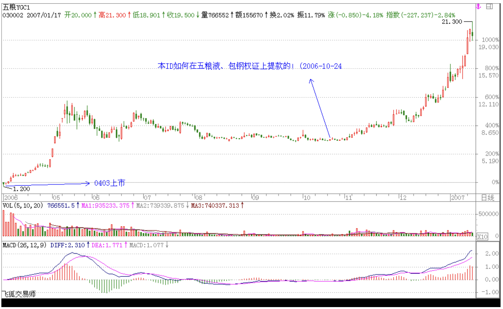
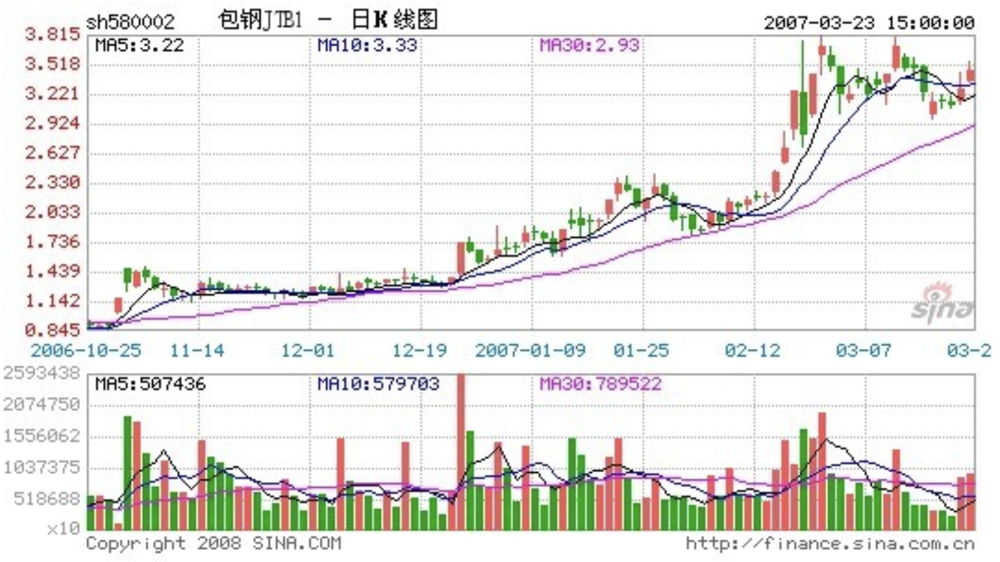
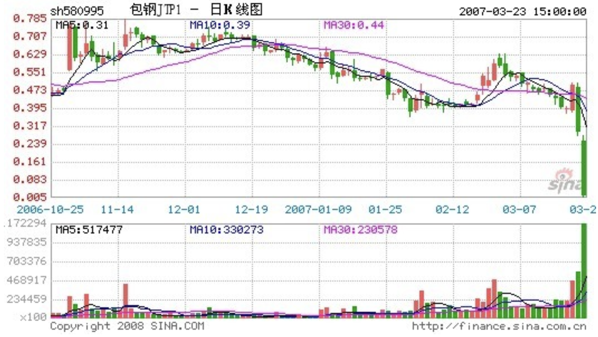
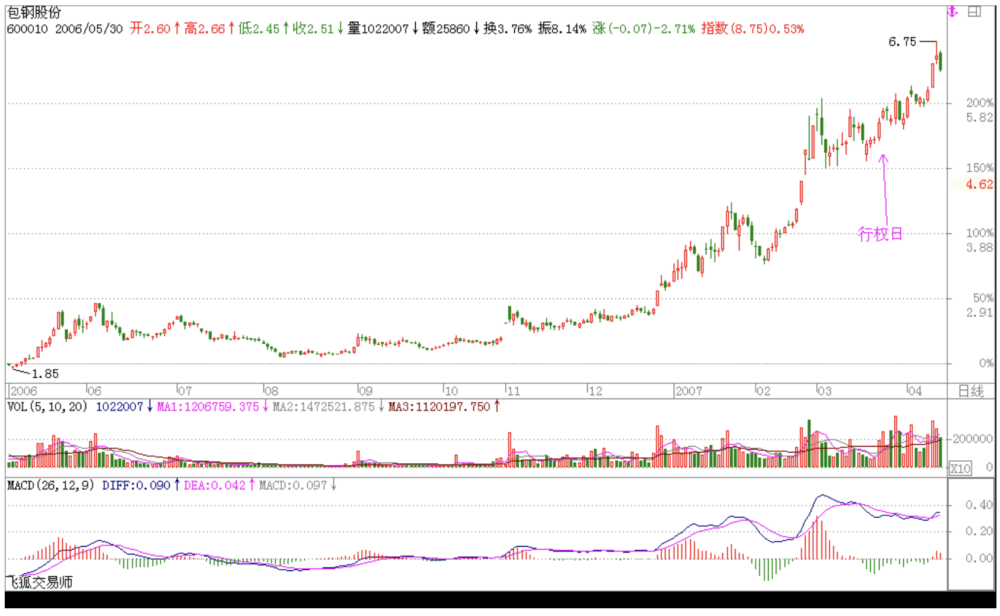

教你炒股票6：本ID如何在五粮液、包钢权证上提款的！
2006/10/24 12:45:16
最近忙着和孔二爷闹，满博客都是孔二爷，前两天耍了一下鲁超女活跃一下气氛，今天想继续说说这“教你炒股票”系列。总不能整天都是孔二爷，也要照顾一下孔方兄，都是姓孔的，一碗水要端平。
股票上永远不缺英雄，更永远不缺死去的英雄，最近的英雄们都又在吹投资，但投资这内裤永远掩盖不了股票扒光后赤裸裸的投机。阴符云：“ 天性，人也；人心，机也；立天之道以定人也。天发杀机，斗转星移；地发杀机，龙蛇起陆；人发杀机，天地反覆；天人合发，万化定基。”不投这个机，又如何夺天地之造化？股票市场也是一样的。
对于本ID来说，这股票市场就如同提款机，时机到了，就去提款，时机不到，就让他搁在那。市场就如同男人，整天管他就会犯贱，就会咬你。所以男人不能经常搞，这市场也一样，必须耐心等待他的骚动，他不骚动，是不能搞的。本ID曾写帖子“G股是G点，大牛不用套！”，连G点都不明白，是没资格谈论股票的。
如同要找到男人的G点，就要对这男人充分了解，要找到这市场的G点，其道理是一样的。但就像光知道男人有G点还是不能乱搞，首先要了解他是干净的，是安全的，否则高潮还没有就翘了，那不麻烦大了？这市场也是一样的，不是什么机会、G点都要搞的，首先的前提要安全，要像去银行提款一样安全。就像又有G点又干净的男人才值得搞，市场上也只有这样又安全又能G点的机会，才值得投机。
就像四月份时本ID在五粮液、包钢认购权证上的布局。为什么选择他们而不是其他，道理很简单，因为他们既有认购又有认沽，而对于企业来说，除非行情特别不好，否则是不会让认沽兑现的，因为不兑现，这就是一个空头支票，而兑现是要掏真金白银的。因此，对既有认购又有认沽的认购权证来说，认沽和认购的行权价之间的差价，就是认购权证最安全的底线。对于五粮液、包钢认购权证，这个底线就分别是1.02和0.43元。而本ID当时分别在1元多和4毛多吃他们，是不是和去银行提款一样安全？唯一遗憾的是，他们的盘子都太小，属于小男人的类型，容纳不了太大的资金。小男人，没什么劲；小盘的股票，也一样。
投机不是瞎搞，是要清清楚楚地搞。要清清楚楚，就要对市场充分地理解，要明白其道道。本ID曾发明了一个口号在私下流传，就是“像搞男人一样搞股票，像做爱一样做股票。”不明白这，没资格谈论股票。关于这个话题，今天就到这，有时间、有心情，继续。
（待续） 附录 五粮液

包钢 认购权证
1、权证交易代码：580002；权证交易简称：包钢 JTB1
2、标的证券代码：600010；股权分置改革方案实施前，标的证券简称：包钢股份，股权分置改革方案实施后，标的证券简称：G 包钢
3、权证类别：备兑认购权证
4、行权方式：欧式，仅可在权证存续期内最后 5 个交易日行权
5、行权价：2.00 元
6、行权比例：1，即 1 份认购权证可按行权价向包钢集团购买 1 股包钢股份 A 股股票
7、结算方式：证券给付方式结算，即认购权证行权时包钢集团按行权价格向行权者收取现金并支付股份
8、存续期间：自认购权证上市之日起 12 个月，为 2006 年 3 月 31 日起至 2007 年 3 月 30 日止

认沽权证
1、权证交易代码：580995，权证交易简称：包钢 JTP1
2、标的证券代码：600010；股权分置改革方案实施前，标的证券简称：包钢股份，股权分置改革方案实施后，标的证券简称: G 包钢
3、权证类别：备兑认沽权证
4、行权方式：欧式，仅可在权证存续期内最后 5 个交易日行权
5、行权价：2.45 元
6、行权比例：1，即 1 份认沽权证可按行权价向包钢集团出售 1 股包钢股份 A 股股票

正股走势

回复
缠中说禅 2006/10/24 12:51:13
这个算一个调剂，不能都是说《论语》的，不能太“同”了。
缠中说禅 2006/10/24 19:36:57
[匿名] 6954k
2006-10-24 17:25:39
问一个“调剂”的问题，咱也调剂调剂：
男G点在哪儿里？
=========
你没手？实践是检验真理的唯一标准。自己检验去！
缠中说禅 2006/10/24 21:14:19
[匿名] 数字老怪
2006-10-24 20:32:23
佩服。好文章。我都不好意思写字咧。阴符没你读的好。惭愧啊。
=========
过谦了。
缠中说缠 2006-11-22 10:58:10
多谢大侠指教。我就是那个冰火。我大概明白你的意思了，假如 Y 是认沽行权价，X 是认购行权价，那企业为了自己的利益会尽量保证行权当天的股价不低于 Y，所以认购权证的最终价格会不低于 Y-X， 所以只要认购权证的价格跌到(Y-X)以下的区间内，都是比较安全的。是这个意思吗?
==
不一定要跌到那区间，基本就不会跌到那区间，在上面高点的位置就可以了，那是一个底线，基本不会跌破。所以你就有了一个几乎绝对安全的标准。像最近的武钢，几乎绝对安全线在 0.21 元，在 0.35 元见到底部。等于你用最多 30% 的风险去赌 300% 的利润，这样当然可以介入了。